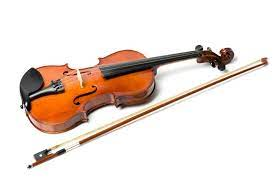
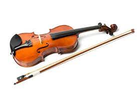

{kind=link}

The violin, sometimes known as a fiddle, is a wooden chordophone (string instrument) in the violin family. Most violins have a hollow wooden body. It is the smallest and thus highest-pitched instrument (soprano) in the family in regular use. The violin typically has four strings, (some can have five), usually tuned in perfect fifths with notes G3, D4, A4, E5, and is most commonly played by drawing a bow across its strings. It can also be played by plucking the strings with the fingers (pizzicato) and, in specialized cases, by striking the strings with the wooden side of the bow (col legno).
Violins are important instruments in a wide variety of musical genres. They are most prominent in the Western classical tradition, both in ensembles (from chamber music to orchestras) and as solo instruments. Violins are also important in many varieties of folk music, including country music, bluegrass music, and in jazz. Electric violins with solid bodies and piezoelectric pickups are used in some forms of rock music and jazz fusion, with the pickups plugged into instrument amplifiers and speakers to produce sound. The violin has come to be incorporated in many non-Western music cultures, including Indian music and Iranian music. The name fiddle is often used regardless of the type of music played on it.
The violin was first known in 16th-century Italy, with some further modifications occurring in the 18th and 19th centuries to give the instrument a more powerful sound and projection. In Europe, it served as the basis for the development of other stringed instruments used in Western classical music, such as the viola.
Violinists and collectors particularly prize the fine historical instruments made by the Stradivari, Guarneri, Guadagnini and Amati families from the 16th to the 18th century in Brescia and Cremona (Italy) and by Jacob Stainer in Austria. According to their reputation, the quality of their sound has defied attempts to explain or equal it, though this belief is disputed. Great numbers of instruments have come from the hands of less famous makers, as well as still greater numbers of mass-produced commercial "trade violins" coming from cottage industries in places such as Saxony, Bohemia, and Mirecourt. Many of these trade instruments were formerly sold by Sears, Roebuck and Co. and other mass merchandisers.
The components of a violin are usually made from different types of wood. Violins can be strung with gut, Perlon or other synthetic, or steel strings. A person who makes or repairs violins is called a luthier or violinmaker. One who makes or repairs bows is called an archetier or bowmaker.
The earliest stringed instruments were mostly plucked (for example, the Greek lyre). Two-stringed, bowed instruments, played upright and strung and bowed with horsehair, may have originated in the nomadic equestrian cultures of Central Asia, in forms closely resembling the modern-day Mongolian Morin huur and the Kazakh Kobyz. Similar and variant types were probably disseminated along east-west trading routes from Asia into the Middle East, and the Byzantine Empire.
The direct ancestor of all European bowed instruments is the Arabic rebab, which developed into the Byzantine lyra by the 9th century and later the European rebec. The first makers of violins probably borrowed from various developments of the Byzantine lyra. These included the vielle (also known as the fidel or viuola) and the lira da braccio. The violin in its present form emerged in early 16th-century northern Italy. The earliest pictures of violins, albeit with three strings, are seen in northern Italy around 1530, at around the same time as the words "violino" and "vyollon" are seen in Italian and French documents. One of the earliest explicit descriptions of the instrument, including its tuning, is from the Epitome musical by Jambe de Fer, published in Lyon in 1556. By this time, the violin had already begun to spread throughout Europe.
The violin proved very popular, both among street musicians and the nobility; the French king Charles IX ordered Andrea Amati to construct 24 violins for him in 1560. One of these "noble" instruments, the Charles IX, is the oldest surviving violin. The finest Renaissance carved and decorated violin in the world is the Gasparo da Salo (c.1574) owned by Ferdinand II, Archduke of Austria and later, from 1841, by the Norwegian virtuoso Ole Bull, who used it for forty years and thousands of concerts, for its very powerful and beautiful tone, similar to that of a Guarneri. "The Messiah" or "Le Messie" (also known as the "Salabue") made by Antonio Stradivari in 1716 remains pristine. It is now located in the Ashmolean Museum of Oxford.
A violin generally consists of a spruce top (the soundboard, also known as the top plate, table, or belly), maple ribs and back, two endblocks, a neck, a bridge, a soundpost, four strings, and various fittings, optionally including a chinrest, which may attach directly over, or to the left of, the tailpiece. A distinctive feature of a violin body is its hourglass-like shape and the arching of its top and back. The hourglass shape comprises two upper bouts, two lower bouts, and two concave C-bouts at the waist, providing clearance for the bow. The "voice" or sound of a violin depends on its shape, the wood it is made from, the graduation (the thickness profile) of both the top and back, the varnish that coats its outside surface and the skill of the luthier in doing all of these steps. The varnish and especially the wood continue to improve with age, making the fixed supply of old well-made violins built by famous luthiers much sought-after.
The majority of glued joints in the instrument use animal hide glue rather than common white glue for a number of reasons. Hide glue is capable of making a thinner joint than most other glues. It is reversible (brittle enough to crack with carefully applied force and removable with hot water) when disassembly is needed. Since fresh hide glue sticks to old hide glue, more original wood can be preserved when repairing a joint. (More modern glues must be cleaned off entirely for the new joint to be sound, which generally involves scraping off some wood along with the old glue.) Weaker, diluted glue is usually used to fasten the top to the ribs, and the nut to the fingerboard, since common repairs involve removing these parts. The purfling running around the edge of the spruce top provides some protection against cracks originating at the edge. It also allows the top to flex more independently of the rib structure. Painted-on faux purfling on the top is usually a sign of an inferior instrument. The back and ribs are typically made of maple, most often with a matching striped figure, referred to as flame, fiddleback, or tiger stripe.
The neck is usually maple with a flamed figure compatible with that of the ribs and back. It carries the fingerboard, typically made of ebony, but often some other wood stained or painted black on cheaper instruments. Ebony is the preferred material because of its hardness, beauty, and superior resistance to wear. Fingerboards are dressed to a particular transverse curve, and have a small lengthwise "scoop," or concavity, slightly more pronounced on the lower strings, especially when meant for gut or synthetic strings. Some old violins (and some made to appear old) have a grafted scroll, evidenced by a glue joint between the pegbox and neck. Many authentic old instruments have had their necks reset to a slightly increased angle, and lengthened by about a centimeter. The neck graft allows the original scroll to be kept with a Baroque violin when bringing its neck into conformance with modern standards.
Strings were first made of sheep gut (commonly known as catgut, which despite the name, did not come from cats),or simply gut, which was stretched, dried, and twisted. In the early years of the 20th century, strings were made of either gut or steel. Modern strings may be gut, solid steel, stranded steel, or various synthetic materials such as perlon, wound with various metals, and sometimes plated with silver. Most E strings are unwound, either plain or plated steel. Gut strings are not as common as they once were, but many performers use them to achieve a specific sound especially in historically informed performance of Baroque music. Strings have a limited lifetime. Eventually, when oil, dirt, corrosion, and rosin accumulate, the mass of the string can become uneven along its length. Apart from obvious things, such as the winding of a string coming undone from wear, players generally change a string when it no longer plays "true" (with good intonation on the harmonics), losing the desired tone, brilliance and intonation. String longevity depends on string quality and playing intensity.
A violin is tuned in fifths, in the notes G3, D4, A4, E5. The lowest note of a violin, tuned normally, is G3, or G below middle C (C4). (On rare occasions, the lowest string may be tuned down by as much as a fourth, to D3.) The highest note is less well defined: E7, the E two octaves above the open string (which is tuned to E5) may be considered a practical limit for orchestral violin parts,but it is often possible to play higher, depending on the length of the fingerboard and the skill of the violinist. Yet higher notes (up to C8) can be sounded by stopping the string, reaching the limit of the fingerboard, and/or by using artificial harmonics.
A violin is usually played using a bow consisting of a stick with a ribbon of horsehair strung between the tip and frog (or nut, or heel) at opposite ends. A typical violin bow may be 75 cm (30 in) overall, and weigh about 60 g (2.1 oz). Viola bows may be about 5 mm (0.20 in) shorter and 10 g (0.35 oz) heavier. At the frog end, a screw adjuster tightens or loosens the hair. Just forward of the frog, a leather thumb cushion, called the grip, and winding protect the stick and provide a strong grip for the player's hand. Traditional windings are of wire (often silver or plated silver), silk, or baleen ("whalebone", now substituted by alternating strips of tan and black plastic.) Some fiberglass student bows employ a plastic sleeve as grip and winding. Bow hair traditionally comes from the tail of a grey male horse (which has predominantly white hair). Some cheaper bows use synthetic fiber. Solid rosin is rubbed onto the hair, to render it slightly sticky; when the bow is drawn across a string, the friction between them makes the string vibrate.
 
